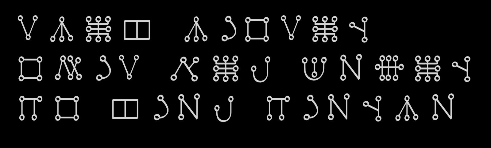

Esoterik und Magie
Ein "Sigillen-Player" für Android, der mit Buchstaben, Zahlen, Hebräischer Schrift oder mit dem Malachim-Alphabet kreisförmige und Planetenquadrat-Sigillen zeichnet und animiert.
Die Installationsdatei für den Sigillen-Player downloaden.
Die apk-Datei herunterladen umd installieren. Obwohl ich mich als "Google Entwickler" registriert habe, kommen wahrscheinlich trotzdem Warnmeldungen bei der Installation, da die APDE-Programmierumgebung, die ich benutze, nicht mehr aktualisiert wird.
Die modernen Klassiker
Franz Bardon, Karl Spiesberger und H. E. Douval.


Bardon, Franz: Der Weg zum wahren Adepten. Freiburg i. Br.: Bauer, 1994.
Spiesberger, Karl: Magische Einweihung. Berlin: Schikowski, o. J.
Spiesberger, Karl: Magische Praxis. Berlin: Schikowski, o. J.
Douval, H. E.: Bücher der praktischen Magie. Interlaken: Ansata, 8. Aufl.
Tarot
Meine Lieblings-Tarotdecks. Neben dem Rider-Waite-Colman-Smith-Tarot zum Kartenlegen am liebsten die intuitiven Decks von Toppi und Pinter und auch das esoterische Zillich-Tarot. Das Botanica-Tarot wegen der schönen Pflanzenbilder und die Decks von Manara, Serpieri und Frazetta eher als Comic- und Fantasy-Fan. Das Dakini-Orakel, weil es sehr spirituell ist und das Shamans Oracle wegen der schönen und geheimnisvollen Höhlenmalereien.


Tarot-App
Eine kleine Tarot-App für Android, hier mit dem "Primordial Tarot", das Deck ist leider in der App nicht verfügbar.
Durch schütteln des Handys werden ein bis fünf Karten ausgewählt, die nebeneinander angezeigt werden. Langes Drücken blendet Kartenbeschreibungen ein und aus.
(Aber dies ist nur ein Bildschirmvideo zur Demonstration!)
Die Lautformelsprache Ela Vior
Lautformelsprache ist keine gesprochene Alltagssprache, sondern ein Instrument der Schwingung und bewussten Resonanz. Diese Sprache dient nicht der Mitteilung, sondern der Wirkung: Sie soll die feinstofflichen Ebenen ansprechen, insbesondere die Elemente und Naturgeister.
➔ Lautformelsprache Ela Vior
➔ Wortbildung in Ela Vior
➔ Vokabular

Der „Charm of Making“ aus dem Film "Excalibur" (1981) in Ela Vior:
„Ruach Vioran
Othir Shal Betan
Do Chiel djenvé“
„Atem des Drachen
Zauber von Tod und Leben
Form deine Wirkung“
MalachimWriter
Läuft online im Browser.
➔ MalachimWriter
Sommer 2026